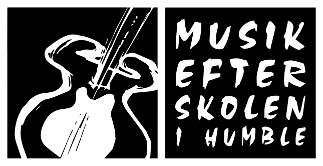

Humble purity test
(KDKL står for "køn du kan lide")
har drukket på skolen
har taget stoffer på skolen
har svaret lærer igen
har du stjålet noget i spar
er du blevet fanget af klaus
har du været inde på kontoret i en dårlig kontekst
har du fået skæld ud af hertz
har du været på tænker
har du stjålet fra magnus køkken(mælk,leverpostej, mel,,, etc)
har du nasset på nogens luft
har du cyklet til stranden om natten og lavet bål
har du sovet i kor
kommet forsent til morgenmad HVER dag i en uge
har du glemt at gøre rent og talt dig ud af den
har du ligget med nogle af KDKL(kønnet du kan lide) i narnia
har du pjækket
har du meldt dig syg
har du meldt dig syg, men bare for at pjække, og så indså du, det er sindsygt forfærdeligt
har du puttet salt/pepper i nogens mad/vand mens de kiggede væk i spisesalen
har du løjet for lærerne
har sovet på en anden gang en hverdag
har du lavet KG-incest
er du blevet blokerede af en eller flere fra skolen
har du pisset på personaletoilettet
har du talt gossip med emma
har du fanget dig selv i at kigge lidt for meget på Tommy til kor (og bare generelt)
har du bagtalt nogen
har du haft en samtale med lærerne og dine forældre
har du grædt foran en lærer
er du blevet set nøgen af en lærer
er du blevet gået ind på af en lærer
har lærerne ledt dine ting igennem
har hooket op med 2 eller flere fra skolen
har hooket op med 5 eller flere fra skolen
har brudt paragraph fem
har knaldet på en tredjepersons værelse
har knaldet i et bad/toilet på skolen
har knaldet i et fælles toilet
har fået et oral/givet af en på skolen
har knaldet før frokost på skolen
har knaldet med en fra langeland efterskole
har knaldet på efterskolebussen
har kysset med en på skolen
har kysset med en af KDKL på skolen
har gået i bad med en af KDKL på skolen
har holdt i hånd med an af KDKL på skolen
har snavet med en af KDKL på skolen
har nøgenbadet på stranden
har snavet med 5 eller flere fra skolen
har snavet med 10 eller flere fra skolen
har sendt pikante ankel billeder til nogen på skolen
har onaneret på skolen
har onaneret på 10 forskellige toiletter på skolen
har haft en trekant på skolen
har haft sex på en mark inden for skoletid
har onaneret mere end 2 gange på en dag på skolen
har onaneret med en ikke vidende person i rummet på skolen
har onaneret i Narnia
har lavet hærverk på skolen
har lavet grafitti i Humble
har fået en smøg af en Humbleboer
har røget gyats på skolen
har du lejede med skolens største gøt (Aksel')
været på Akorden mere end fem gange
har sovet på en anden gang en hverdag
lavet nudler på fermaten
er blevet pruttet på af Noah
har været på ship træet seriøst mere end 5 gange
?
har sovet et andet sted end en seng
fået Magnus til at klage over musiken
været i spar uden bukser på
haft deep talk med Søren
haft fnat
haft lus
har følt Hertz' hovede
lyttede til hele broadways album væg
fået stik and poke
fået en piercing på skolen
fået ens tær observeret af Petra
set bennisbadekar i Narniaen
blevet medlem af Pers Vidner
kommet på humble lookalikes
brækket sig til en elevfest
stjålet en af Linus' faxe
fået dit hår klippet hos Thilde
snakket med Ravnen om krig
brugt solo undervisning som undskyldning for at pjæk
haft en ubehaglig samtale med Villads Grue
blevet flashed af Villads Grue
gemt sig under klaveret til kor
streaked på skolen
er du blevet munket
har du prøvet at flirte med en lærer
har du fået ondt i maven efter at spise Magnus' mad
skidt mens der var en der gik ind
er du blevet låst inde i et lokale
leget gemmeleg på hele skolen
fået karse
er du blevet jagtet under natterend
beregn score
din score: